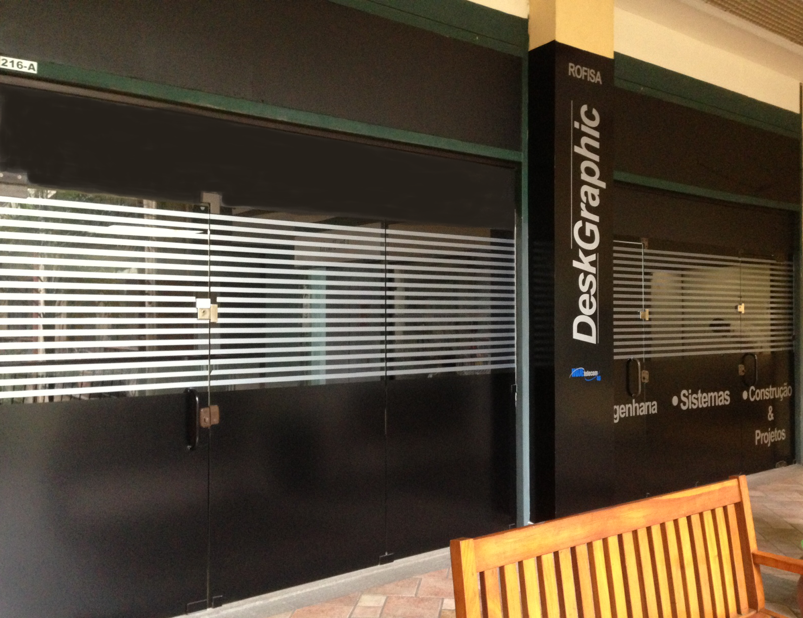

Especializou-se em tecnologia de ponta para CAD, SISTEMAS GIS e Aplicações para Arquitetura e Infraestrutura.
Em paralelo a essas atividades, a Empresa desenvolveu uma unidade de negócios especializada em Construção Civil, atuando com seriedade e qualidade na Área de Engenharia, Sistemas, Construção e Incorporação.
Ao longo deste período temos recebido vários prêmios e homenagens nacionais e internacionais.
Contamos com profissionais treinados e qualificados, para atender as suas expectativas, com presteza, pois, a agilidade no atendimento é um de nossos diferenciais.
Qualidade e Confiabilidade são nossos valores fundamentais, seja na Construção, nos Projetos ou Sistemas GIS.
Deskgraphic
A DeskGraphic com seus 22 anos de sucesso empresarial iniciou suas atividades dentro de uma renomada universidade carioca.Seus sócios eram professores e chegaram a Diretoria Acadêmica desta Univercidade.Especializou-se em tecnologia de ponta para CAD, SISTEMAS GIS e Aplicações para Arquitetura e Infraestrutura.
Em paralelo a essas atividades, a Empresa desenvolveu uma unidade de negócios especializada em Construção Civil, atuando com seriedade e qualidade na Área de Engenharia, Sistemas, Construção e Incorporação.
Ao longo deste período temos recebido vários prêmios e homenagens nacionais e internacionais.
Contamos com profissionais treinados e qualificados, para atender as suas expectativas, com presteza, pois, a agilidade no atendimento é um de nossos diferenciais.
Qualidade e Confiabilidade são nossos valores fundamentais, seja na Construção, nos Projetos ou Sistemas GIS.